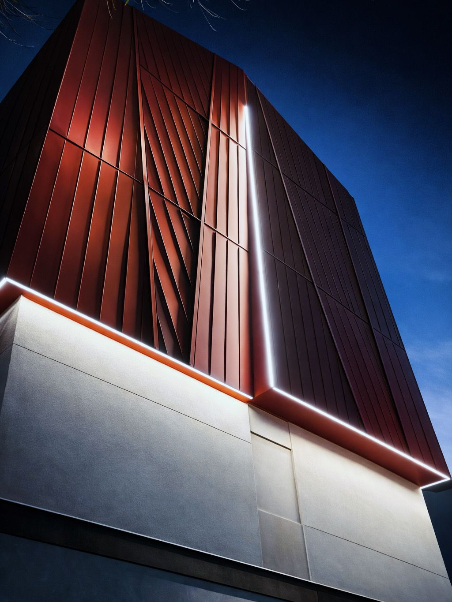

Coperture e lattoneria
Copertura in alluminio grigio chiaro ad aggraffatura semplice
Torino (TO)
Copertura in alluminio grigio chiaro con sistema ad aggraffatura semplice, ai piedi della Mole Antonelliana.

Una selezione di cantieri Arpal in Piemonte e nelle località alpine: impermeabilizzazioni, coperture e lattoneria, facciate e rivestimenti metallici.
Torino (TO)
Copertura in alluminio grigio chiaro con sistema ad aggraffatura semplice, ai piedi della Mole Antonelliana.
Torino (TO)
Manto di copertura in lastre di alluminio grigio chiaro, posate con sistema a doppia aggraffatura.
Montà (CN)
Copertura in alluminio pre-patinato a doppia aggraffatura, su più falde a diversa pendenza.
Trezzo Tinella (CN)
Manto di copertura in rame realizzato con sistema a doppia aggraffatura.
Cervinia (AO)
Copertura in alluminio antracite con sistema a doppia aggraffatura, in un contesto alpino.
Rivestimento di abbaini in zinco-titanio quartz, con sistema a doppia aggraffatura.
Busca (CN)
Rivestimento di un gazebo in alluminio Genius antracite, con lastre disposte a raggiera.
Trezzo Tinella (CN)
Copertura in rame a doppia aggraffatura, con falde di più misure realizzate secondo progetto.
Alba (CN)
Rivestimento di cornicione in alluminio nero opaco, con intradosso effetto legno.
Alba (CN)
Facciata ventilata in alluminio aggraffato, che migliora la circolazione dell'aria e riduce i consumi energetici dell'edificio.
Margarita (CN)
Involucro continuo in alluminio bronzato con doppia aggraffatura e aggraffatura semplice, con lastre a passo alternato.
Torino (TO)
Facciata in pannelli HPL con finitura effetto Corten, su sottostruttura a doghe in alluminio modello «X».
Cortina d'Ampezzo (BL)
Rivestimento di facciata in acciaio inox opaco e a specchio, con aggraffatura angolare.
Pinerolo (TO)
Rivestimento completo dell'edificio in zinco-titanio.
Salmour (CN)
Facciata in alluminio antracite con sistemi a doppia aggraffatura e aggraffatura semplice.
Treiso (CN)
Rivestimento dell'ingresso di una cantina in zinco-titanio.
Trezzo Tinella (CN)
Rivestimento di una pensilina realizzato con pannelli compositi.
Trezzo Tinella (CN)
Rivestimento di facciata e soffitto realizzato con pannelli compositi.
Monforte d'Alba (CN)
Rivestimento di facciata in alluminio verde maculato e marrone, con sistema ad aggraffatura semplice.
Clavesana (CN)
Rivestimento in RHEINZINK pre-patinato grigio scuro, con sistema ad aggraffatura angolare.
Trezzo Tinella (CN)
Rivestimento di un bow window con lastre di alluminio verniciate a polvere.
Cerretto Langhe (CN)
Portale in ferro verniciato a polvere con finitura effetto Corten.
Serralunga d'Alba (CN)
Impermeabilizzazione con guaina bituminosa ardesiata nella variante testa di moro.
San Sicario (TO)
Impermeabilizzazione con guaina bituminosa ceramizzata.
Alba (CN)
Impermeabilizzazione di muretti con guaina bituminosa ceramizzata nera.
Orbassano (TO)
Correzione delle pendenze con pannelli isolanti e impermeabilizzazione con doppia guaina bituminosa ardesiata.
Torino (TO)
Posa di guaina bituminosa idonea a ricevere l'asfalto colato.
Torino (TO)
Rivestimento di copertura con guaina bituminosa.
Rivestimento di copertura piana con guaina bituminosa.
Alba (CN)
Impermeabilizzazione di una copertura piana con guaina bituminosa.
Alba (CN)
Posa di pannelli isolanti e impermeabilizzazione con guaina bituminosa.
Impermeabilizzazione di muri controterra con guaina bituminosa, contro umidità e infiltrazioni.
Raccontaci l'intervento: il form guidato ti aiuta a definire le esigenze in pochi passaggi, oppure scrivici direttamente.